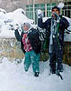
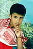

Featured stories
Abu Khalid, our pens are incapable of writing, our minds are incapable of thinking, and our tongues are incapable of speech. If we fill the sea with ink, it would not be enough to write how great you were in life. I won't cry for you because you are not dead inside me. My memories of you live on.
I waited for Tammam there but started to worry and phoned him on his mobile. A stranger's voice answered me telling me that the owner of this mobile was lying in the hospital. I arrived at the hospital to discover that he was dead. I uncovered him. Looked at him. Touched him. He was warm and I kissed him. He was my angel."
Amin used to say to his friends, "Why do we live amongst stones, bullets and blood? Why do we have no independence and never know safety and security? We live amongst wild soldiers, destruction and martyrs. Are we ever going to live a happy life?"

One soldier took aim and shot Yasser from a distance of 20m. Live ammunition lodged in his heart and he was rushed to the hospital where they operated on him in a corridor in an attempt to save his life. He was placed in intensive care. He was the first person shot and the last to die, four months later in a Jordanian hospital on the 6th February 1997.
As you browse the website listen to Al-Kellimat Al-Abira ("Passing Words"), a poem by Mahmoud Darweesh with music by Samieh Shkir in Real Audio format. A translation is available here. To take full advantage of the Java features of this website or if you are experiencing display problems, make sure you are browsing with the latest version of Netscape Navigator or Microsoft Internet Explorer.
This website was set up by a group of Palestinians and
internationals living in the West Bank and Gaza Strip,
with coordination by Birzeit University's Public
Relations Office. The website is intended to show the
human face behind the statistics of the September 1996
clashes.
The website put together by Birzeit staff and students
during the clashes last year, that offered daily
reports from "on the ground" in Ramallah, the town
become battlefield.
An introduction to the historical, religious and
social implications of martyrdom in Palestinian
society.
Stories from the lives of the martyrs, as told by
their family and friends, in words and photos. At the
time of launch 4:25pm on Thursday 25 September 1997,
16 completed stories were available. Information and
photos has been received from a further fifteen
families and friends of the 70 remaining martyrs.
These will be added in the coming weeks. Eventually,
every story of those who lost their lives in the
clashes will be available.
How you can support the familes and further memorial
projects.
About this website
On the Ground in Ramallah
The Martyr in Society
Personal Stories
How You Can Help
Webpage by Birzeit Web Team, September 1997. All
comments to
webmaster@birzeit.edu